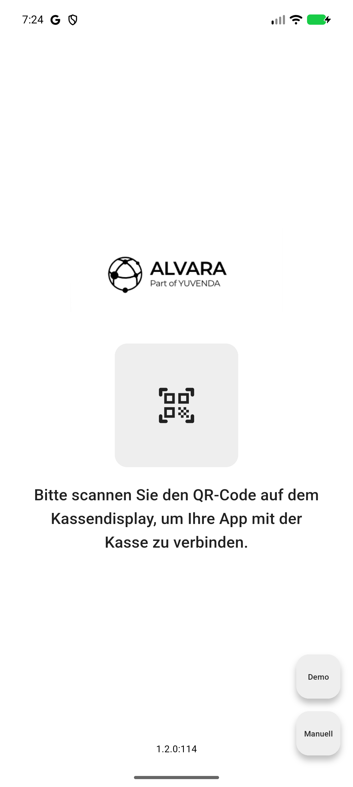

In Betrieb nehmen
Von der leeren Kasse bis zur verbundenen App: Voraussetzungen prüfen, Artikel freigeben, verbinden, Zahlwege aktivieren.
Voraussetzungen
Kasse
- Betriebsbereite ITR Kasse mit eingerichteter technischer Sicherheitseinrichtung (TSE)
- Lizenz POS-Gastro Anbindung: monatlich abgerechnet, pro Filiale, deckt die gebuchte Anzahl Geräte ab. Jedes weitere Gerät bzw. jede weitere Verbindung ist zusätzlich zu lizenzieren. Übersicht: ITR Partner Service → Produkte → ITR Kasse → Module und Lizenzmodelle: Referenz
- Eine Schaltfläche in der Kassenmaske mit der Aktion Order-App verbinden. Sie erzeugt den QR Verbindungscode.
Versionen
ITR Kasse | App | Stand |
|---|---|---|
ab 5.51 | ab 1.1 | Beta ohne Bezahlfunktion |
ab 5.54 | ab 1.2 | Beta mit Bezahlfunktion |
ab 5.55 | ab 1.2.1 | Einzelne Positionen bezahlen, Tisch aufteilen durch Verschieben, Gerätezahl aus der Lizenz |
Für iOS und Android wird dieselbe App-Version bereitgestellt, über den Apple App Store und den Google Play Store. Eine neuere App lässt sich in der Regel auch mit einer älteren Kasse betreiben; halten Sie beide trotzdem auf einem zusammengehörigen Stand.
Unterstützt die verbundene Kasse eine Funktion nicht, zeigt die App oben das Info-Symbol Eingeschränkte Funktionen mit den betroffenen Funktionen. Ist die Kasse zu alt für das Bezahlen, meldet die App das im Bezahlvorgang; schließen Sie den Vorgang dann an der Kasse ab. Fehlt eine Funktion oder bleibt sie ohne Wirkung, prüfen Sie zuerst die Kassenversion.
Bediener
Der Bediener, der mit der App arbeiten soll, muss an der Kasse angemeldet sein. Der Verbindungscode gilt für genau diesen Bediener.
Netzwerk
- Stabile IPv4-Verbindung zwischen Kasse und Mobilgerät
TCP 8080muss vom Mobilgerät auf dem Kassenrechner erreichbar sein
Nicht gleichzeitig betreiben
Floating und die POS Gastro App lassen sich derzeit nicht parallel betreiben. Auf einer Kasse mit App muss Floating deaktiviert sein, sonst kommt es zu Tisch- und Bonkonflikten.
Optional
Orderbon über einen eingerichteten Druckpfad, Küchenmonitor Version 2026.
Schritt 1: Artikel freigeben
Die App zeigt nur Artikel, die in den Stammdaten das Stichwort #GASTRO tragen.
- Öffnen Sie die Artikelstammdaten des Artikels.
- Wechseln Sie zu den Stichworten.
- Tragen Sie
#GASTROein — exakt in Großbuchstaben mit vorangestelltem Doppelkreuz. - Speichern Sie den Artikel und wiederholen Sie das für alle bestellbaren Artikel.
Das Stichwort unterscheidet Groß- und Kleinschreibung. Kleingeschrieben wirkt es nicht, der Artikel bleibt in der App unsichtbar.
Standalone-Kasse: Die Stichworte werden direkt an der Kasse gepflegt und wirken sofort nach dem Speichern.
Betrieb mit CentralPoint: Pflegen Sie die Stichworte im CentralPoint und lassen Sie die Stammdaten an die Kasse übertragen. Erst danach kennt die Kasse das Stichwort und meldet den Artikel an die App.
Artikel ohne Warengruppe erscheinen nicht — die App gruppiert die Anzeige nach Warengruppe.
Die App zeigt nur Artikel mit einem Preis in Preisstufe 1.
Schritt 2: App mit der Kasse verbinden
- Melden Sie den Bediener an der Kasse an.
- Führen Sie in den Gastro-Funktionen der Kasse die Aktion Order-App verbinden aus. Die Kasse zeigt einen QR-Code und einen sechsstelligen Verbindungscode.
- Öffnen Sie die App. Sie startet im Verbindungsmodus.
- Tippen Sie auf den QR-Code-Bereich und erlauben Sie den Zugriff auf die Kamera.
- Scannen Sie den QR-Code auf dem Kassendisplay.
- Tippen Sie auf Fortfahren als [Bedienername].
- Die App lädt Artikel und Tischinformationen und zeigt die Hauptansicht.

Verbindungsbildschirm der App: QR-Code scannen, Demo oder manuelle Eingabe.
Der QR-Code enthält die IP-Adresse der Kasse, die Bediener-ID und den Verbindungscode.
Der Verbindungscode gilt nur für eine Anmeldung. Erzeugen Sie für jedes weitere Gerät an der Kasse einen neuen Code.
Ohne Kamera oder wenn der Scan fehlschlägt: Tippen Sie auf Manuell und tragen Sie IP-Adresse des Kassenrechners, Bediener-ID und den sechsstelligen Code ein, dann Fortfahren als [Bedienername]. Auf einem Gerät ohne Kamera — etwa einem Testgerät in einer virtuellen Umgebung — ist das der einzige Weg.
Die Verbindung entsteht in zwei Schritten. Ab ITR Kasse 5.55 prüft die App den Code beim Scannen zunächst nur und zeigt den Bediener zur Bestätigung an. Erst Fortfahren als [Bedienername] verbraucht den Code und öffnet die Sitzung. Ein abgebrochener Scan belegt deshalb keinen Geräteplatz. Ein zweiter Anmeldeversuch mit demselben Code wird abgewiesen — der Code ist nach der Bestätigung verbraucht.
Mehrere Netzwerkadressen an der Kasse
Hat der Kassenrechner mehrere Netzwerkadapter — etwa LAN und WLAN —, ist die Kasse über jeden von ihnen erreichbar, aber nur eine der Adressen liegt im selben Netz wie die Mobilgeräte.
Ab ITR Kasse 5.55 zeigt die Kasse deshalb je Adapter einen eigenen QR-Code, als Reiter mit dem Adapternamen über der Adresse. Wählen Sie den Reiter, dessen Adresse zum Netz der Mobilgeräte passt. Alle Reiter enthalten denselben Bediener und denselben Verbindungscode; es genügt, einen davon zu scannen.
- Aufgeführt werden die IPv4-Adressen aller aktiven Adapter. Die Adresse, über die das Standardgateway erreicht wird, steht vorn.
- Loopback-Adressen und Adressen aus dem Bereich
169.254.0.0/16werden weggelassen — über sie ist die Kasse für Mobilgeräte nicht erreichbar. - Hat die Kasse keine brauchbare Adresse, zeigt sie statt des QR-Codes einen Hinweis. Prüfen Sie dann die Netzwerkverbindung des Kassenrechners.
Eine Kasse vor 5.55 zeigt wie bisher genau einen QR-Code.
Wie viele Geräte gleichzeitig arbeiten dürfen
Die Lizenz POS-Gastro Anbindung enthält die Anzahl der Geräteplätze, die für die Filiale im Partnerportal gebucht sind. Ab ITR Kasse 5.55 setzt die Kasse diese Zahl durch.
- Gezählt werden Geräte mit laufender Sitzung, nicht die an der Kasse registrierten Geräte. Arbeiten zwei Bediener nacheinander auf demselben Gerät, zählt das als ein Gerät.
- Ist die Zahl erreicht, weist die Kasse die Anmeldung mit Alle [Anzahl] lizenzierten POS-Gastro-Geräte sind in Benutzung ab. Der Hinweis erscheint bereits beim Scannen, verbindlich entschieden wird bei der Bestätigung.
- Ein Platz wird frei, wenn sich der Bediener in der App abmeldet, wenn er an der Kasse abgemeldet wird, wenn derselbe Bediener sich an einem anderen Gerät anmeldet, oder wenn die Kasse neu startet.
- Ein Gerät, das einfach verschwindet — leerer Akku, außer Reichweite —, behält seinen Platz. Melden Sie das Gerät an der Kasse ab, wenn der Platz sofort gebraucht wird.
Die Zahl gilt je Kasse: Jede Kasse führt ihre eigenen Sitzungen mit demselben filialweiten Wert. Eine Filiale mit mehreren Gastro-Kassen kann deshalb entsprechend mehr Geräte betreiben.
Lässt sich die Zahl nicht ermitteln — etwa weil der Lizenzstatus gerade nicht bekannt ist —, arbeitet die Kasse ohne Begrenzung weiter und vermerkt das in ihrem Protokoll.
Schritt 3: Zahlwege für die App freigeben
Ab ITR Kasse 5.54 mit App 1.2 kann in der App bezahlt werden.
- Öffnen Sie an der Kasse die Einstellungen der Zahlwege.
- Aktivieren Sie am gewünschten Zahlweg Use for Mobile Devices.
- Wiederholen Sie das für jeden Zahlweg, der in der App verfügbar sein soll.
- Starten Sie die App neu.
Barzahlwege stehen in der App immer zur Verfügung. Kartenzahlwege erscheinen nur, wenn Use for Mobile Devices aktiv ist. Ein Kartenterminal steuert die App nicht an (kein ZVT): Die Zahlung läuft am separaten Terminal, die App verbucht sie als Kartenzahlung. Kombinierte Zahlwege sind in der App nicht möglich — dafür muss der Bon oder Tisch vorher aufgeteilt werden.
Die App lädt die Zahlwege beim Start. Nach einer Änderung an der Kasse muss die App neu gestartet werden, sonst arbeitet sie mit dem alten Stand.
Ergebnis prüfen
- Die Hauptansicht der App ist erreichbar und zeigt den richtigen Bedienernamen.
- Ein Tisch lässt sich öffnen, die freigegebenen Artikel erscheinen in ihrer Warengruppe.
- Im Bezahlvorgang stehen die freigegebenen Zahlwege zur Auswahl.
Ohne Kasse vorführen: Demo-Modus
Für Vorführungen und Schulungen arbeitet die App mit lokalen Testdaten. Entweder über die Demo-Schaltfläche im Verbindungsbildschirm, oder über Manuell mit IP-Adresse 999.999.999.999, Bediener-ID 999 und Code 999999. Dieselben Werte funktionieren auch als QR-Code:
{
"address": "999.999.999.999",
"operatorId": "999",
"connectionCode": "999999"
}Im Demo-Modus bleiben alle Aktionen lokal, es gibt keine Verbindung zu einer Kasse. Beim Abmelden oder Beenden der App endet er.
Wenn es nicht funktioniert
- Rufen Sie auf dem Mobilgerät im Browser
http://[IP-Adresse der Kasse]:8080auf. Antwortet die Adresse nicht, liegt es an Netzwerk, Firewall oder daran, dass der Dienst der Kasse nicht läuft. - Meldet die Kasse, dass alle lizenzierten Geräte in Benutzung sind, melden Sie ein nicht mehr benötigtes Gerät ab oder erweitern Sie die Lizenz im Partnerportal.
- Erzeugen Sie an der Kasse einen neuen Verbindungscode.
- Alle Meldungen im Einzelnen: ITR Partner Service → Produkte → POS Gastro App → Störungen beheben